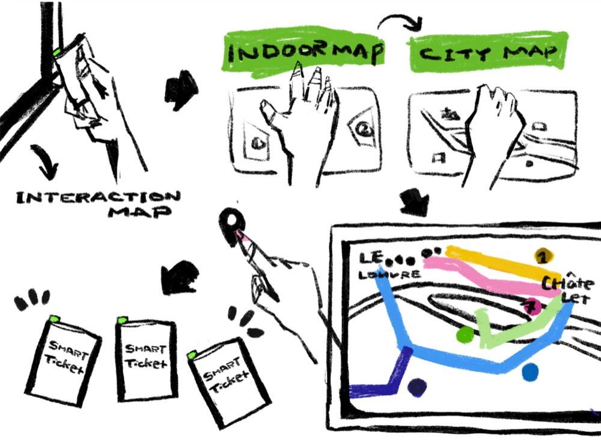
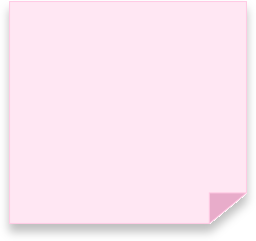
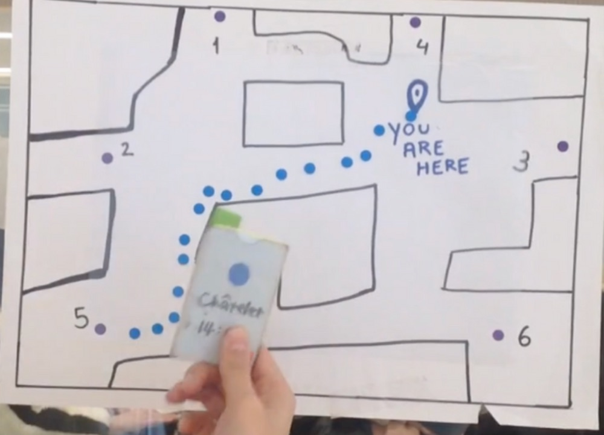
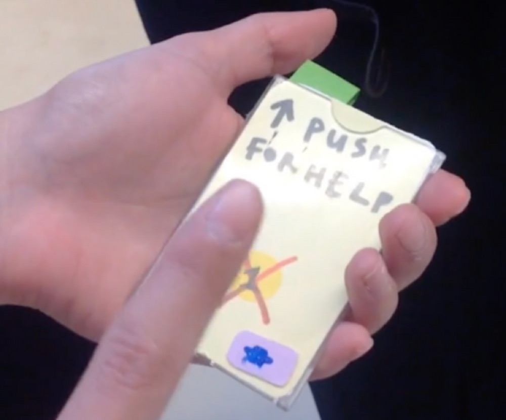
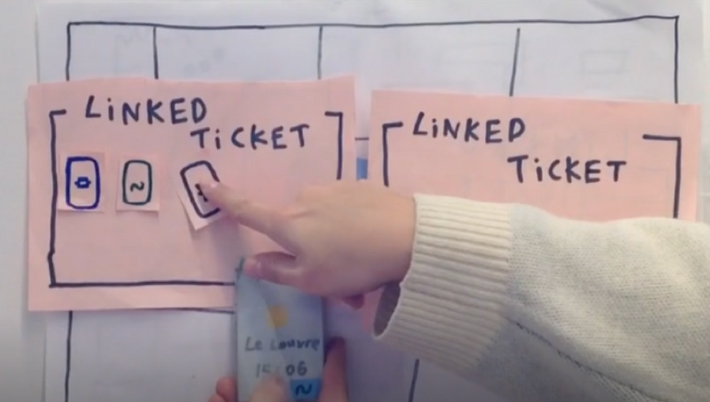
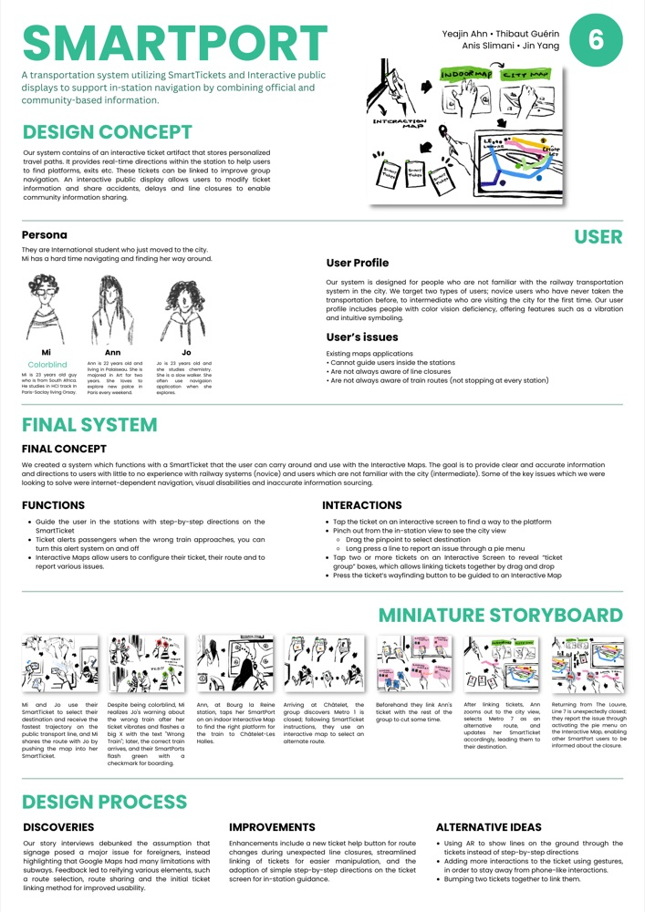

Anis Slimani
Inter-disciplinary Creative
SMARTPORT






SMARTPORT is a user-centered transportation system concept, designed through iterative prototyping, persona development, and usability testing. It addresses navigation challenges for novice and visually impaired transit users with features like Smart-Tickets and interactive public displays.
By focusing on accessibility, real-time guidance, and intuitive interactions, SMARTPORT demonstrates a human-centered approach to solving complex UX challenges in public transportation.

In collaboration with Yeajin AHN, Thibaut Guerin and Jin Yang
SMARTPORT
SMARTPORT is a user-centered transportation system concept, designed through iterative prototyping, persona development, and usability testing. It addresses navigation challenges for novice and visually impaired transit users with features like Smart-Tickets and interactive public displays.
By focusing on accessibility, real-time guidance, and intuitive interactions, SMARTPORT demonstrates a human-centered approach to solving complex UX challenges in public transportation.
In collaboration with Yeajin AHN, Thibaut Guerin and Jin Yang